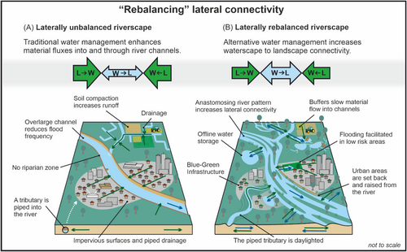

One of the keys to Stage Zero is creating lateral connectivity in river systems so that they have room to adapt. This new article, headed by Dr. Richard Mason, looks at how managment and research should view the need for this connectivity: Lateral connectivity between waterscapes and adjacent landscapes is critical for river health. We review lateral connectivity across disciplines, reframing lateral connectivity for river science and management. We propose “rebalancing” bidirectional, lateral connectivity as a paradigm to employ when seeking to enhance river ecosystems and climate change resilience. 
A special issue of River Research and applications has used an image from a UK Stage Zero project as its front cover. The image is from the article: "Full floodplain connectivity: Realising opportunities for ‘Stage 0’ river restoration" By Dr. Stewart Clark. It is a great article for understanding what Stage Zero is in a practical context and the methods often used to reconnect the flood plain! The abstract reads: "Continued declines in freshwater biodiversity and the challenges of climate change are creating greater interest in river restoration projects. Increasing recognition of the interaction between biological, geomorphological and hydrological processes has led to the development of ‘Stage 0’ river restoration. Stage 0 reaches are typically multi-thread anabranching systems connected to the floodplain and its ecosystems. It is suggested that the defining characteristic of Stage 0 conditions is that of connectivity (longitudinal, lateral and vertical) at base flows. The methods or mechanisms that can re-create such reaches are described, namely valley floor reset, beaver activity, beaver dam analogues and the use of large wood in the channel and floodplain. The scope for wider adoption of Stage 0 is then discussed and recommendations for expanding this approach across temperate regions with a long history of river modification and higher population densities are presented."
Have a look at the front cover here!Swedish river restoration inspired by UK success. A quick read to give you the basis and inspiration of what is currently being considered and researched in Sweden by Dr. Richard Mason.
Ray White and Tracy Hames have kindly written this blog about their trip around a number of restoration sites, led by Colin Thorne. The blog provides a nice overview of the Stage Zero concept situated in the examples of specific sites which they visited. The tour showed how Stage Zero and Stage Eight concepts can be applied in different watersheds with vastly different sizes of river as long as the local context was taken into account. To this end, the blog contains some Stage Zero and Eight lessons the authors learnt during their trip.